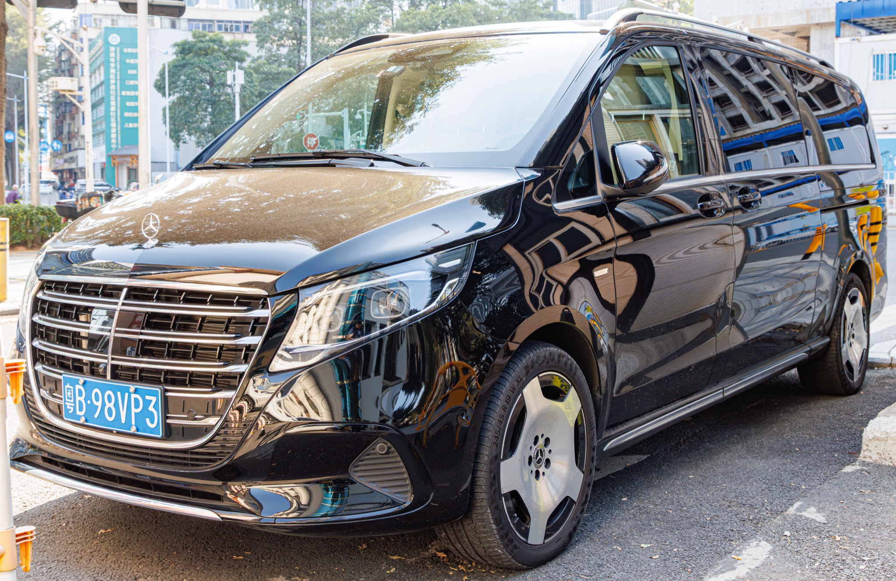

从航班降落大兴的那一刻,直至最后的告别 — 每一日都经过深思熟虑、节奏把控、周全准备。
大兴机场 VIP 接机、转送至华尔道夫酒店,长途飞行后的休整之夜。
慕田峪 — 缆车上山,沿城墙漫步,滑道下山。最壮观的家庭日。
天安门广场、二十四位帝王的皇宫、景山公园观赏黄金时刻全景。
专为孩子准备的一整天 — VIP 快速通行证、功夫熊猫盖世之地、变形金刚、清真餐饮。
清晨游天坛、中国自然博物馆霸王龙特展、前门大街漫步。
东四清真寺主麻日礼拜、牛街穆斯林街区、清真美食街、胡同、什刹海。
昆明湖畔的皇家园林、乘船游湖、高端购物、清真版北京烤鸭告别晚宴。
古玩市场(仅周末开放)、最后一顿午餐、前往大兴机场搭乘 20:05 回程航班。
每一处细节均经过深思熟虑,以尊崇贵家信仰传统,并确保家人的舒适与安心。
每一餐皆采自具有清真认证的餐厅。从牛街穆斯林街区的老字号,到豪华版清真北京烤鸭 — 均经亲自考察确认。
行程兼顾每日五番礼拜。每一天的清真寺与适宜礼拜的空间均已事先勘察确认。主麻日恰好落在 5 月 29 日(周五)。
清晨从容不迫,午后安排休息时段。最具体力挑战的行程,皆安排在 8 岁和 13 岁的孩子精神最饱满的时段。
会讲阿拉伯语或英语的礼宾团队全天候 24 小时通过 WhatsApp 待命 — 无论是餐厅预订、医疗需求、礼拜咨询,还是想听一句来自家乡的熟悉问候。
专属车辆、专属导游;若条件许可 — 在景点享有私人观赏时段。行程中任一段如有需要,均可加派女性导游随行。
为 8 岁的儿子 — 大熊猫、长城滑道、环球影城。为 13 岁的女儿 — 珍珠串饰工坊、霸王龙特展、胡同摄影漫步。
一辆典雅尊贵的座驾 — 八日全程为您独家专享。空间宽敞足以容纳全家与全部行李,品质精致足以应对任何场合。

司机当值时间为 06:00–23:00;夜间随时待命,30 分钟内响应。长行程日配备替班司机。
礼拜毯 4 张、朝向罗盘、冰镇瓶装水、清新香巾、儿童零食、轻便毛毯。
WhatsApp 群组直通司机及阿拉伯语礼宾团队。全日实时灵活调整路线安排。
位于华尔道夫酒店内。精致典雅,可按要求提供清真菜单。如长途飞行后偏好套房内用餐,也可由那家小馆送餐至套房。
距华尔道夫仅 8 分钟车程。始建于公元 1356 年。整周接待昏礼,环境祥和宁静。
若体力允许,可在王府井步行街短暂漫步 — 酒店门外便可欣赏丝绸灯笼展示,氛围温馨怡人。
10 小时飞行之后,第一日节奏从容。我们刻意不将日程排满。养精蓄锐,才能真正开启接下来的旅程。
长城脚下村内,回族家庭经营。手工拉面、羊肉串、传统大饼。
V-Class 车内常备礼拜毯与朝向罗盘。司机熟悉沿途适合做晌礼的安静洁净地点。
从 6 号敌楼下行至山脚,可选单人或双人车款。配有安全带,速度可控。两个孩子都会喜欢。
山顶气温较市区低 5-8°C。车内已为您备好轻便外套。须穿舒适的步行鞋。
皇家风格清真火锅 · 安静的私人包间 · 孩子喜欢看着食材在桌上现涮现吃。北京经典老店,创于 1985 年。
御花园中有僻静凉亭,适合午时礼拜 · 也可在用餐前于餐厅完成。
导游为孩子设计"数龙"小游戏 — 整座皇宫中描绘的龙形图案逾千幅。
紫禁城内步行距离较长 — 超过 4 公里。今日舒适重于风度。请带好饮用水,务必涂抹防晒霜。
北京环球影城园内设有清真认证餐厅 · 已预订家庭包桌 · 园外亦有长营清真餐厅作为备选。
环球影城在各园区附近均设有洁净的多信仰礼拜室 · 导游会提前确认地点。
项目身高门槛恰好契合他的年龄 · 阿宝、虎妞和师傅的见面会 · "无极掌击"!
完整的变形金刚体验 · 她的年龄正适合体验高能 3D 刺激项目。
北京人钟爱的老字号,以清真做法呈现炸酱面(咸香酱料拌面)。传统氛围,地道服务。
地道的维吾尔族清真餐 · 炭烤羊肉 · 丝绸之路香料 · 口味接近阿拉伯人喜好 · 晚间现场音乐表演。
今日的重头戏 · 上午沉浸文化之后,午后看恐龙正是孩子们释放能量的时刻。已预约定时入场。
若霸王龙特展售罄:可改往中国国家博物馆 — 同样令人惊叹,但更偏成人取向。
牛街老字号,创立于 1948 年 · 三代相传的回族家传菜 · 羊肉饺子、手工拉面、芝麻烧饼。
开放可靠的元代清真寺 · 距华尔道夫 10 分钟车程 · 已提前确认女士礼拜区 · 安排与阿訇见面问候。
中国 56 个民族之一 · 中国的穆斯林族群,其祖先一千多年前沿丝绸之路而来。
胡同三轮车路线特别避开了后海酒吧街区 · 全程选用适合家庭出游的路线。
位于颐和园内的清真做法皇家菜。已提前预订湖景座位。
名副其实的旅程压轴 · 北京最负盛名的北京烤鸭,采用清真认证厨房 · 果木烤炉 · 手工擀制薄饼。
可选项目:在虹桥与珍珠串饰大师一同进行 45 分钟工坊体验 · 她可以亲手设计并带走自己制作的淡水珍珠项链。
SKP 主打超高端品牌 · China World Mall 汇聚国际奢侈品牌 · 若家人希望体验讨价还价,可选秀水街(Silk Market)。
回访北京最佳清真餐厅之一,作为告别午餐。皇家满族菜肴的清真做法。
定制家族姓氏书法卷轴 · 为孩子准备的正宗玉佩 · 礼仪茶具套装。
预先安排 VIP 值机 · 安检优先通道 · 全程护送至 Saudia 贵宾休息室 · 临登机即可上机。
国际航班充足预留 · 75 分钟车程已纳入考量 · 退税(VAT)手续由我方代表协助办理。
名单上每一家餐厅均经过亲自考察。每一家均持有中国官方伊斯兰教协会颁发的合规清真认证。
自 1948 年以来便是牛街老字号。手工拉面、羊肉饺子、芝麻烧饼 — 三代相传配方未变。
皇家秘方采用清真做法呈现。安静雅致,晚清风格的私人包房。深受到访的海湾国家王室喜爱。
北京最负盛名的北京烤鸭,采用全清真厨房。果木烤炉、手工擀制薄饼,鸭皮酥脆完美。
自 1985 年起便是皇家风格的清真火锅。安静的私人包间,孩子喜欢看着食材在桌上现涮现吃。北京经典老店。
地道的维吾尔族穆斯林餐 — 炭烤羊肉、手工拉条子、丝绸之路香料。口味接近阿拉伯人喜好 · 晚间现场音乐表演。
皇家风格菜肴的清真做法,位于颐和园园区内。临窗座位可俯瞰昆明湖景。
长城脚下村庄中,回族家庭经营。手工拉面、羊肉串、传统大饼。
北京人钟爱的老字号,以清真做法呈现炸酱面(咸香酱料拌面)。地道氛围,传统服务。
新加坡高端连锁品牌的北京清真分店。点心、烧腊、丝滑面汤。现代典雅,口味温和。
伊斯兰教在北京有逾千年的历史。这些清真寺将于本周每日礼拜时接待贵宾家庭。
贵宾一家的首选清真寺 — 距华尔道夫酒店仅 8 分钟车程。元代建筑庄严静谧,稳定开放接待礼拜,包括 5 月 29 日(周五)的主麻日礼拜。
北京最古老、规模最大的清真寺,创建于一千多年前。穆斯林北京的核心所在,周边汇聚着这座城市最受钟爱的清真餐厅与商铺。
位于颐和园附近,十分便利,是第七日完成晌礼或晡礼的理想之所。回族社群活跃,环境友好,维护良好。
除以上三座之外,北京拥有70 余座清真寺。Mercedes V-Class 车内备有礼拜毯、朝向罗盘以及供小净使用的清新洁水 — 司机会在每日适当时间提供协助。
您所需知晓的一切 — 均已处理、安排、悉心照料。
能在帝都接待贵宾一家,是我们的荣幸。
愿这八日的回忆,如紫禁城屋顶上的
鎏金一般珍贵长存。